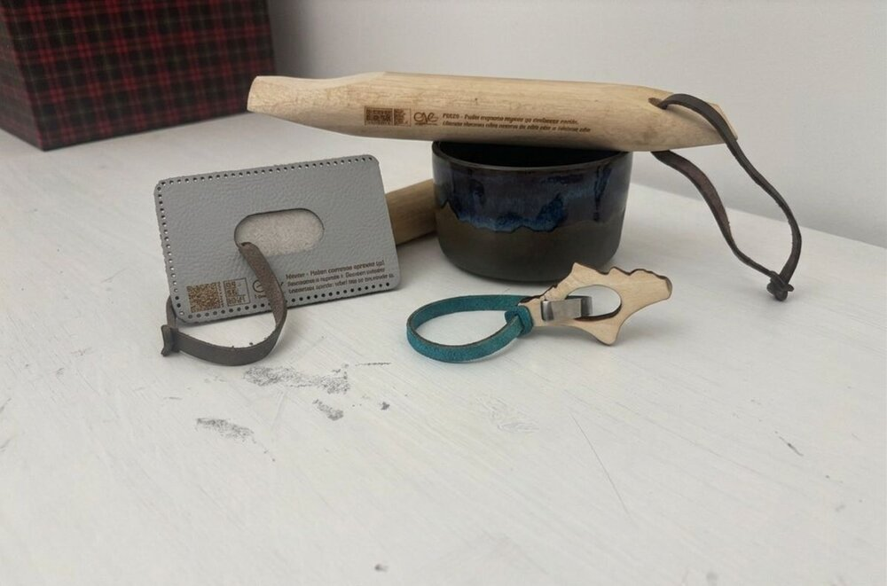
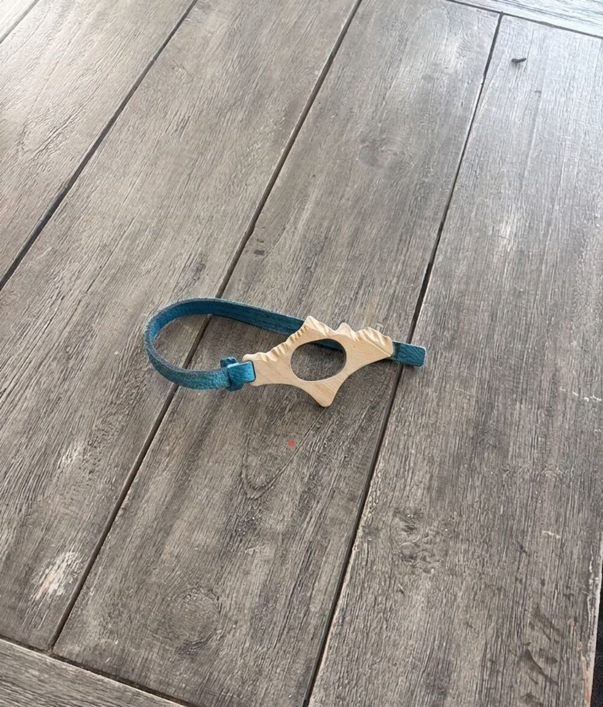

Sezione B · Presentazione Esame di Maturità
Un percorso di crescita tra laboratori, artigiani e sostenibilità. Le esperienze che hanno lasciato il segno nei cinque anni al Pascal.
Panoramica
| Anno | Progetto | Ore |
|---|---|---|
| 3° Anno | Corso di Sicurezza — IIS Blaise Pascal | 12 |
| «Ogni giorno è il giorno della memoria» — IIS Blaise Pascal | 20 | |
| FSL + EcoGadget — Museo Alessandri | 19 | |
| 4° Anno | FSL — Associazione La Piazzetta | 42 |
| Corso di Primo Soccorso — IIS Blaise Pascal | 12 | |
| Totale ore FSL | 105 | |
Progetto in Evidenza
Ecogadget Made in GAL è un progetto avviato nel 2023 dal GAL Escartons e Valli Valdesi per coinvolgere gli studenti delle scuole superiori del Pinerolese, della Val di Susa e della Val Sangone nella progettazione di oggetti sostenibili da utilizzare nelle iniziative del territorio. Accompagnati da un designer professionista, abbiamo lavorato su temi come la sostenibilità dei materiali, la logistica e il significato della co-progettazione, visitando anche il FabLab di Pinerolo e diverse realtà artigianali del territorio legate ai materiali dei vari progetti — feltro, legno e ceramica — tra cui L'Officina, il laboratorio di ceramica di Sara, a Giaveno. Il nostro istituto ha ideato l'aprilibro in legno: un piccolo oggetto funzionale in legno di recupero, poi realizzato dal laboratorio artigianale Baciaski di Andrea Domard a Prali, in collaborazione con il FabLab di Pinerolo.
Il percorso si è concluso il 3 ottobre con un evento al Salone dei Cavalieri di Pinerolo, dove sono stati presentati i quattro ecogadget vincitori del progetto — tra cui il nostro aprilibro — nati dalla collaborazione tra studenti, designer e artigiani del territorio.


Collegamento con Educazione Civica
Il progetto Ecogadget Made in GAL mi ha fatto capire che la sostenibilità è un concetto molto più ampio di quanto pensassi. Non basta scegliere materiali di recupero — nel nostro caso il legno usato per l'aprilibro — per poter dire che un prodotto è sostenibile. Durante il percorso abbiamo ragionato anche sulla logistica: dove vengono lavorati i materiali, come vengono trasportati, quanta energia consuma ogni passaggio della filiera produttiva. Un oggetto realizzato con materiali riciclati ma spedito dall'altra parte del mondo può avere un impatto ambientale molto superiore a uno prodotto localmente con materiali nuovi. È proprio questo che distingue una scelta davvero sostenibile da una che lo è solo in apparenza: considerare l'intero ciclo di vita del prodotto, dalla materia prima alla destinazione finale, tenendo conto di ogni variabile — ambientale, economica e sociale.
Riflessione
"Questa esperienza mi è piaciuta perché univa capacità di problem solving — e più in generale di progettazione — con il lavoro manuale effettivo. Vedere come si lavora l'argilla, ad esempio, mi ha fatto rendere conto di quanto in realtà sia faticoso anche il lavoro manuale: ci sono voluti infatti molti prototipi prima di trovarne uno che rispettasse tutte le caratteristiche che volevamo."